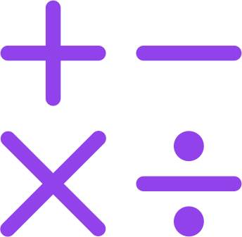

As operações básicas da aritmética incluem a adição, subtração, multiplicação e divisão.
Elas são essenciais para resolver problemas matemáticos e são utilizadas em diversas áreas do conhecimento.
A adição combina valores, a subtração encontra diferenças, a multiplicação representa somas repetidas e a divisão distribui quantidades em partes iguais.
